Case Study - CSE 556A
CookMate - Meal Prep for Students on a Budget
By Oen McKinley, Mijung Jung, Kefei Duan, and Sangwon Bae
The Problem
College students often have difficulty maintaining healthy eating habits.
Studies have shown that improper eating habits can lead to serious health problems and can also impact students' academic performance. Getting regular, healthy meals is vital to both long-term health and success in school. However, studies have also shown that college students are often most likely to skip meals, eat unhealthy foods, and otherwise miss out on key nutritional balance.
A key reason for this is because they lack the time and money to prepare healthy meals. This can be due to the time constraints of their school schedules and school work. For example, students have to attend classes, study for exams, and complete assignments. For students who work part-time or have family-related responsibilities, this problem becomes even more difficult to resolve. The time constraints are exacerbated as deadlines are approaching for key milestones, such as exams and projects. In other words, the pressures are worsened throughout a given semester, resisting improvement.
Some students attempt to work around this problem by eating fast food or premade meals, but this can lead to health problems and other issues. Moreover, the lack of time can also lead to a lack of motivation and energy, leading to more pressure and subjecting students to a vicious cycle that is difficult to escape.
Understanding the Students
With this information gained from researching college students and their eating habits, we wanted to get a deeper understanding of the specific problems and barriers that this demographic faces. To this end, we conducted an interview methodology of both college students and recent graduates to get their first-hand experience on what problems they have or what solutions they have found. An interview methodology was employed to get deeper, qualitative insights than what would be possible with a quantitative survey methodology.
Our interviewees represented a wide range of eating habits, with a variety of needs related to fod access. Multiple interviewees reported having healthy eating habits, but those that reported not having healthy eating habits always stated that they wished they could. This shows that unhealthy eating habits in students are often a product of external forces and a lack of perceived access to healthier alternatives.
For example, one interviewee lived off-campus and thus did not have easy access to dining hall food or other fast options. This led him to often resort to fast food or frozen meals, such as pizzas. Another interviewee reported having good eating habits, often eating salads and healthy snacks and looking for a range of nutrients in their diet, but also lamenting the cost of buying so much pre-made food and the time they spent going to a dining hall or a store for pre-made meals each day. A third interviewee had a more "mixed" relationship with healthy eating, in that they reported often trying to eat healthy and often cooking at home for up to an hour or two when they had time, but also that they resorted to instant noodles or fast food whenever time was tighter. One interviewee also pointed to grocery shopping as a barrier, as they could only go to the store once every week or two and could not make the trip every time they ran out of food. These examples all showcase different barriers and coping mechanisms that students have, but also showcases a desire among all of them for fast, easy, and cost-effective meal options.
However, one of our interviewees had a self-reported very good relationship to well-balanced eating and cooking. When asked about how they maintain their healthy eating habits, they claimed that their secret was in meal planning. By planning their meals in advance, they found that they would only need one grocery run per week, and they could make a meal in 30-60 minutes and eat it for several days, even up to a week. This meant that they could spend money and time on grocery shopping once and cooking up to twice each week, and get all of the nutrients they need. This interviewee claimed to only eat unhealthy foods, such as instant noodles, as an occaisional treat and never as a necessity.
From these user interviews, we decided that this solution of meal prepping would simultaneously resolve the issues of time and cost. By planning meals in advance, students would be able to better manage their time and money. As a secondary feature, we wanted to make sure that the application included features to help with groceries; for instance, creating a grocery list to help facilitate the gap between planning a meal and shopping for groceries.
Paper Prototype
We began by creating a deliberately lo-fidelity paper prototype. Starting with a parallel design process in which all of our group members independently generated ideas for the site design, we then collaborated to combine and refine the ideas into one single paper prototype. The prototype was deliberately simple to avoid design-level distractions and focus the user experience on the tasks and functionality of the prototype.
We then ran a series of user tests on the prototype, using tasks based on our target users and required functionality. After each set of user tests, we revised the prototype according to user feedback and problems that occurred during testing.
This included revising the entire home page and all recipe pages (though some of the text pieces for lists were kept). The changes made were largely for clarity, including clearer/larger text and placement of items to be more straightforward. It also included features that had been initially left out of the prototype in error, including the ability to “favorite” (or save for later) recipes to later use and add to the plan calendar. It also included changing the calendar view to include labels for “Breakfast”, “Lunch”, and “Dinner” to better communicate where different meals should be placed.
We also printed the description of user tasks out so that the user can go back to the task when they are lost. At the beginning of the task, we would ask the user to read and ask questions if they have any. We created colored star stickers so that the user can click “Star,” which turns the start icon red, letting the user know that it has been added to the “Favorites” list. We also created more ingredients and extra recipes so that the user can get more results when they try to filter the recipe. We created a video page so that when the user clicks the recipe, it allows the user to watch the video and learn how to make a meal.
The action cycle can be conceptualized in relation to the change made that turns the star icon red. First, the user wants to add a recipe to the “Favorites” list. The intention is to press the star icon. The sequence of actions that are planned is to press the star icon. The physical execution of the action sequence is to press the star icon. With the change that has been made, one can perceive a change. The change is that the star icon is now red. Before the change, the color of the star would not have changed. Interpreting the change in color in line with one’s expectations, the user can see that the color of the star icon has changed in line with the user’s expectations. Before the change in the prototype, the star not changing in color would confuse the user, who would have thought that the star would change in color due to the star having been pressed. With the change to the prototype having been implemented, the user evaluates the result as being conducive to the user’s expectations, giving the user a more intuitive and comfortable user experience.
We added + add on button on the recipes which were missing + button. Before handing out the task page, we explained to the user how to perform the user testing: speak out loud what you are trying to do and what you are performing. On the Dietary Restriction filter, we added options for searching for allergies and gave the user the ability to click allergies they had under the allergy option. This allowed them to filter out the allergy they had and remove the recipe containing the ingredients they were allergic to. We created more colored star stickers to support the user having multiples of favorites. However, these implementations were not used during the user testing because they did not use the “Favorite” feature. We created more ingredients and recipes to the list to support more options.
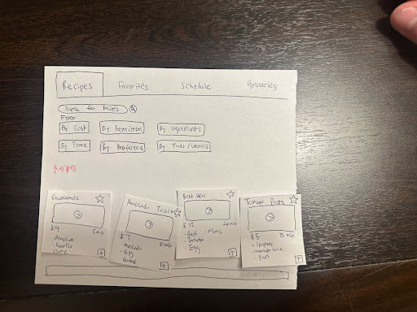 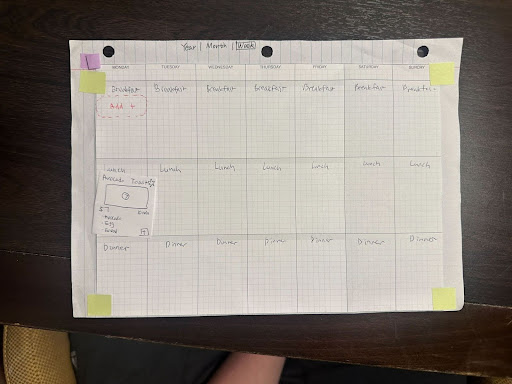 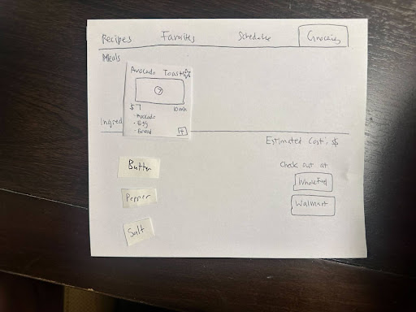Design System
We then moved to a digital Design System using Figma. This design system was made up of atoms (indivisible parts of the design, such as buttons or inputs), molecules (collections of atoms into more complicated structures like cards or individual filters), and organisms (collections of molecules to create more complex functionality, such as a grid of cards or panel of filters). We also used a consistent color and style theme for as many pieces of the design as possible.
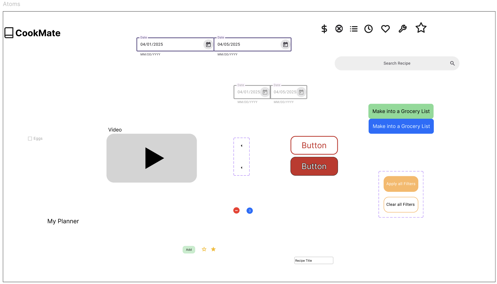 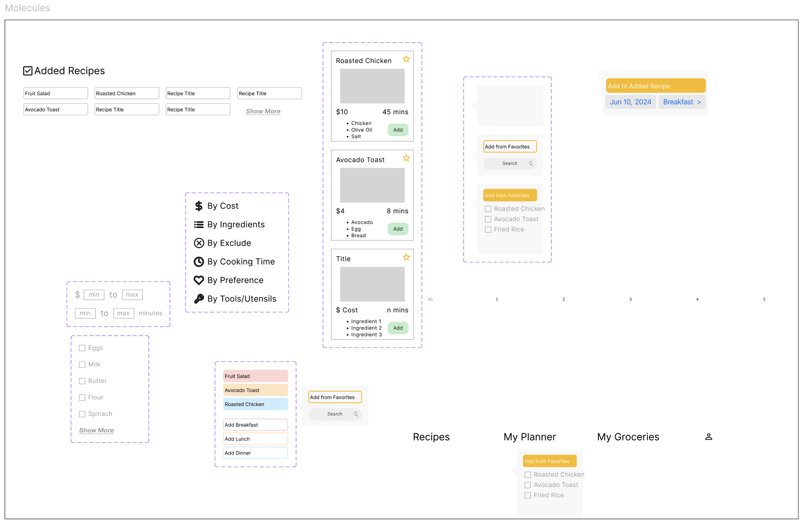 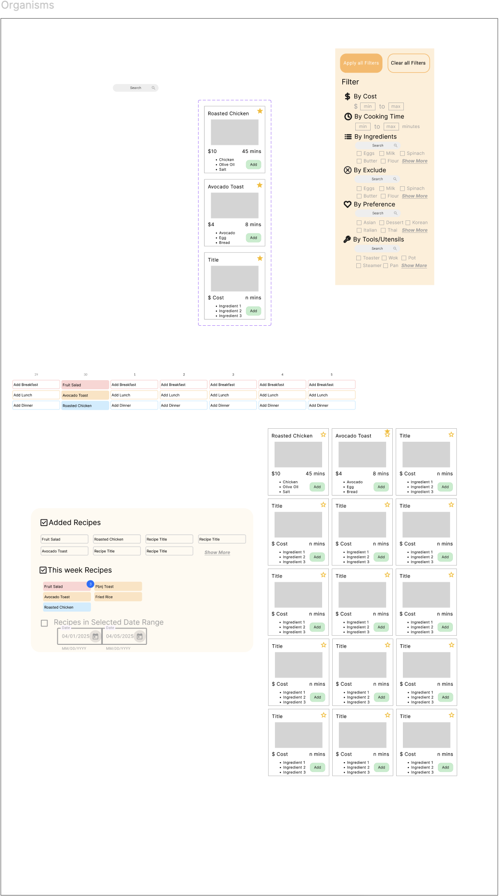 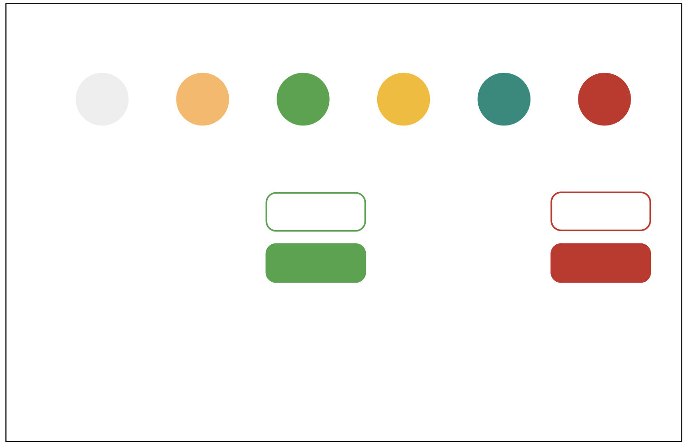These organisms were then organized into pages for the application. Similar to the paper prototype, we wanted a recipe search page, a calendar view, a profile, a page view for recipes, and a grocery list generator. These pages were designed as below, with the molecules and organisms from the design system.
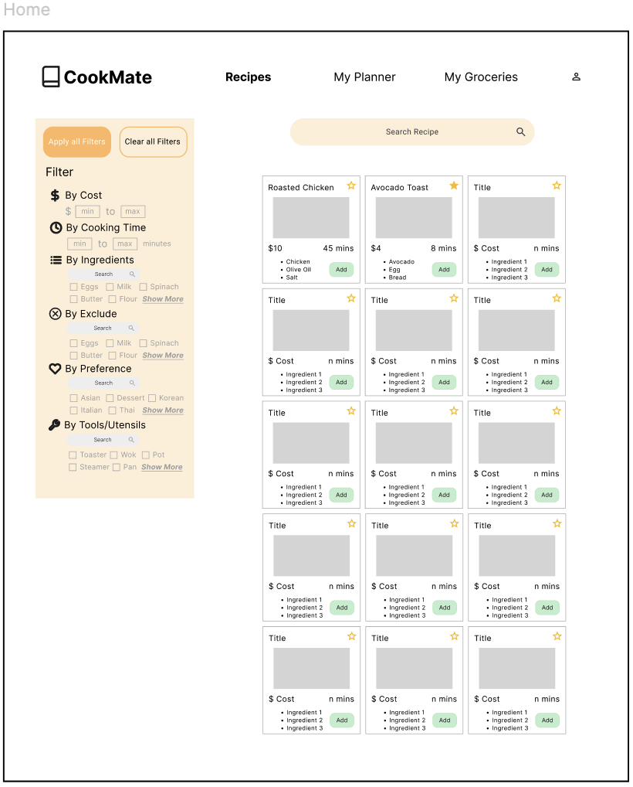 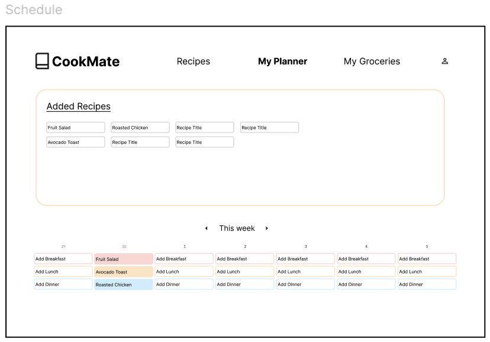 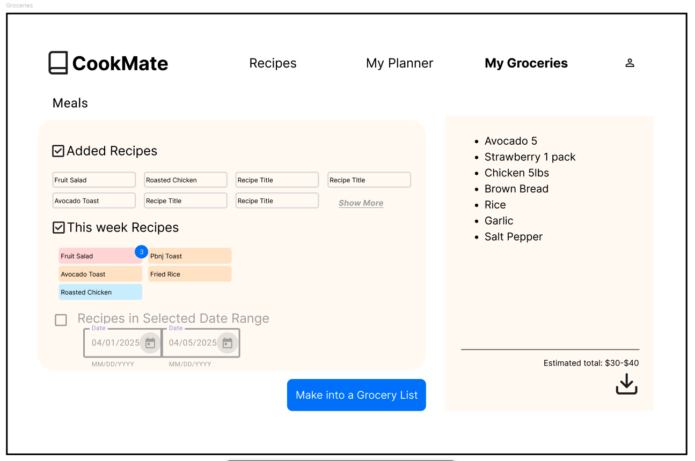 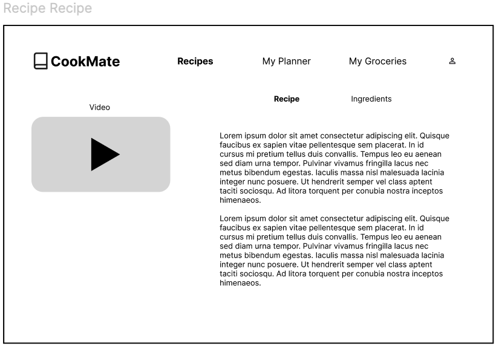 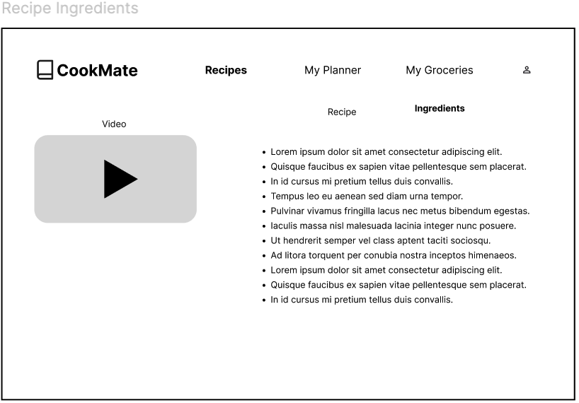 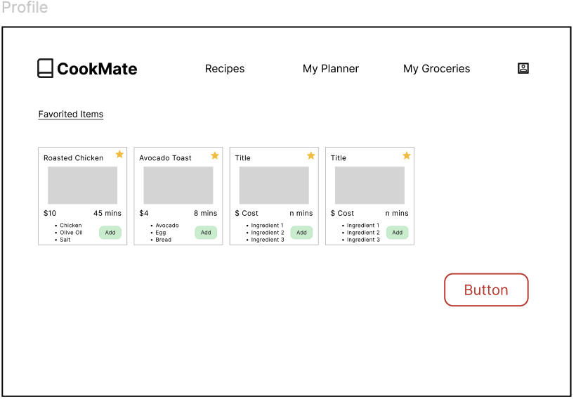Digital Prototype
We then created a digital prototype in HTML, CSS, and Javascript. Using Figma, we were able to largely generate CSS and HTML code to replicate the appearance of the Figma design, although changes were made for both practical and aesthetic reasons due to the limitation of using raw coding for the website design.
In the same way as our paper prototype, we then conducted a series of user tests on our digital prototype to ensure it was intuitive, functional, and user-friendly. We then revised the prototype after each user test to ensure that the problems or feedback were addressed. This included changes ranging from simple bug fixes (like buttons not functioning as intended) to feature addition (such as clicking and dragging elements) to complete redesign (such as an overhaul of the recipe filtering functionality).
Final Prototype
These user tests resulted in the current final prototype. Due to time constraints as a result of the nature of this course project, we were unable to address every problem we found, and therefore this is not a perfectly polished version of the application. It also does not have full backend capabilities. However, as a prototype, it is fully functional. We are proud of the state it is in.
To see the final prototype, click here!
Moving Forward
We learned a lot from this process. Though there were many successes along the way, there are many things we would do differently.
The first thing we would like to do differently is to likely not use a literal paper prototype. We fully grasp the importance of a lo-fi prototype in the design process, as it helps to understand the basic function and design hierarchy of elements without committing to heavily to a specific polished aesthetic. However, making the prototype out of paper was more difficult and time-consuming than something like PowerPoint or Figma, and introduced problems with accessibility. For example, one of our group members was unable to come to class due to illness, but since that member had the prototype at the time, our other members were unable to progress on the prototype or share the load of user testing. Similarly, changing the appearance of an individual element meant redrawing the entire page, not just the element in question. Although it is very preferable to code, the paper prototype proved unwieldy for practical purposes.
Another thing we would do differently is to rely more heavily on parallel design. We implemented this, as mentioned, for our paper prototype design, but due to time constraints we did not use it for the design system or digital prototype. We believe this would have helped to make sure that our designs were more diverse, and may have avoided some of the revision work we needed to do later.
However, all in all, our design may not be fully polished, but is an accomplishment we can be proud of!